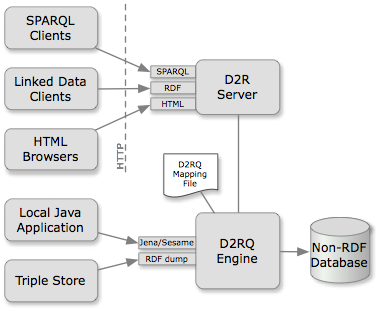

<!DOCTYPE html>
<html lang="en">
<head>
  <meta charset="utf-8">
  <title>D2R Server | The D2RQ Platform</title>
  <link rel="stylesheet" type="text/css" href="style.css" />
  <script src="http://ajax.googleapis.com/ajax/libs/jquery/1.7.1/jquery.min.js"></script>
  <script src="script.js"></script>
<script type="text/javascript">

var _gaq = _gaq || [];
_gaq.push(['_setAccount', 'UA-30091096-1']);
_gaq.push(['_trackPageview']);

(function() {
  var ga = document.createElement('script'); ga.type = 'text/javascript'; ga.async = true;
  ga.src = ('https:' == document.location.protocol ? 'https://ssl' : 'http://www') + '.google-analytics.com/ga.js';
  var s = document.getElementsByTagName('script')[0]; s.parentNode.insertBefore(ga, s);
})();

</script>
</head>
<body>
  <header>
    <div class="document-collection">This document is part of the <a href="/">D2RQ documentation</a>.</div>
    <h1>D2R Server: Accessing databases with SPARQL and as Linked Data</h1>
  </header>

<p>
D2R Server is a tool for publishing relational databases on the Semantic Web.
It enables RDF and HTML browsers to navigate the content of the database,
and allows querying the database using the SPARQL query language.
It is part of the <a href="/">D2RQ Platform</a>.
</p>

<ul class="toc small">
<li>1. <a href="#about">About D2R Server</a></li>
<li>2. <a href="#features">Features</a></li>
<li>3. <a href="#running">Running D2R Server</a>
  <ul>
    <li>3.1 <a href="#command-line">Running D2R Server from the command line</a></li>
    <li>3.2 <a href="#servlet-container">Running D2R Server in a servlet container</a></li>
  </ul>
</li>
<li>4. <a href="#configuration">D2R Server configuration</a>
  <ul>
    <li>4.1 <a href="#configuration-options">Server-level configuration options</a></li>
    <li>4.2 <a href="#metadata-template">Dataset and Resource metadata</a></li>
  </ul>
</li>
<li>5. <a href="#optimizing">Optimizing performance</a></li>
</ul>


<h2 id="about">1. About D2R Server</h2>

<p>D2R Server is a tool for publishing the content of relational databases
on the <a href="http://www.w3.org/2001/sw/">Semantic Web</a>, a global
information space consisting of
<a href="http://en.wikipedia.org/wiki/Linked_Data">Linked Data</a>.</p>

<div style="float:right; margin-left: 2em"></div>

<p>Data on the Semantic Web is modelled and represented in
<a href="http://en.wikipedia.org/wiki/Resource_Description_Framework">RDF</a>.
D2R Server uses a customizable
<a href="d2rq-language">D2RQ mapping</a>
to map database content into this format, and allows the RDF data to be
<em>browsed</em> and <em>searched</em> &#8211; the two main access paradigms
to the Semantic Web.</p>

<p>Requests from the Web are rewritten into SQL queries via the mapping. This on-the-fly translation allows publishing of RDF from large live databases and eliminates the need for replicating the data into a dedicated RDF triple store.</p>


<h2 id="features">2. Features</h2>

<dl>
<dt>Browsing database contents</dt>
<dd>A simple web interface allows navigation through the database's contents and gives users of the RDF data a “human-readable” preview.</dd>

<dt>Resolvable URIs</dt>
<dd>Following the <a href="http://linkeddatabook.com/editions/1.0/#htoc8">Linked Data principles</a>, D2R Server assigns a URI to each entity that is described in the database, and makes those URIs resolvable – that is, an RDF description can be retrieved simply by accessing the entity's URI over the Web. Semantic Web browsers like <a href="http://marbles.sourceforge.net/">Marbles</a> or <a href="http://linksailor.com/">LinkSailor</a> can follow links from one entity to the next, surfing the Web of Data.</dd>

<dt>Content negotiation</dt>
<dd>Following <a href="http://www.w3.org/TR/cooluris/">best practices</a>, the regular web interface and the browsable RDF graph share the same URIs. Read more about the interfaces offered by D2R Server, including example HTTP requests and responses, in the Technical Note <a href="http://www4.wiwiss.fu-berlin.de/bizer/d2r-server/publishing/"><em>Publishing Databases on the Semantic Web</em></a>.</dd>

<dt>SPARQL endpoint and explorer</dt>
<dd>The SPARQL interface enables applications to query the database using the <a href="http://www.w3.org/TR/sparql11-query/">SPARQL 1.1</a> query language over the <a href="http://www.w3.org/TR/sparql11-protocol/">SPARQL protocol</a>. A simple SPARQL explorer is included.</dd>

<dt>Downloading contents of BLOBs/CLOBs</dt>
<dd>D2R Server can be configured to serve files stored in the database in BLOBs or CLOBs. <a href="d2rq-language#download-map">more…</a></dd>

<dt>Serving the vocabulary</dt>
<dd>If new classes and properties are introduced for a D2R deployment, the server can make their URIs resolvable in the spirit of Linked Data, and allows configuration of their labels, comments, and additional properties. <a href="d2rq-language#servingvocabularies">more…</a></dd>

<dt>Publishing metadata</dt>
<dd>Metadata such as licensing and provenance information can be attached to every RDF document and web page published by D2R Server. <a href="#metadata-template">more…</a></dd>
</dl>


<h2 id="running">3. Running D2R Server</h2>

<p>First, <a href="/">download</a> the D2RQ distribution.</p>

<p>For development and testing, D2R Server can be started from the
command line. The recommended setup for production is to
deploy the D2R Server web application into a servlet container
such as <a href="http://tomcat.apache.org/">Apache Tomcat</a>
or <a href="http://jetty.codehaus.org/jetty/">Jetty</a>.</p>

<p>See also: <a href="getting-started">Getting started with D2RQ</a></p>


<h3 id="command-line">3.1 Running D2R Server from the command line</h3>

<p>D2R Server can be run as a stand-alone server application that includes
its own web server. This is recommended for testing and development.</p>

<pre>d2r-server <a href="#arg-port">[--port <em>port</em>]</a> <a href="#arg-b">[-b <em>serverBaseURI</em>]</a>
      <a href="#arg-fast">[--fast]</a> <a href="#arg-verbose">[--verbose]</a> <a href="#arg-debug">[--debug]</a>
      <a href="#arg-mapping-file"><em>mapping-file.ttl</em></a></pre>

<dl>
<dt id="arg-mapping-file"><code>mapping-file.ttl</code></dt>
<dd><p>The name of the <a href="d2rq-language">D2RQ mapping file</a> to use.</p>

<p>If no mapping file is provided, then the database connection must be
specified on the command line using the same <a href="generate-mapping#connection">connection
parameters</a> as for the <code>generate-mapping</code> tool,
and a default mapping will be used.</p>
</dd>

<dt id="arg-port"><code>--port <em>port</em></code></dt>
<dd>D2R Server will be started on this port. Defaults to 2020.</dd>

<dt id="arg-b"><code>-b <em>serverBaseURI</em></code></dt>
<dd>The base URI where D2R Server is running. Defaults to
<code>http://localhost:2020/</code>. Must be specified if the D2R Server
is to be accessible from other machines or if it is supposed to be run
on a port other than 2020.</dd>

<dt id="arg-fast"><code>--fast</code></dt>
<dd>Enables bleeding-edge optimizations that result in better performance
but may not be as well-tested. Generally we recommend the use of this
option unless problems are observed.</dd>

<dt id="arg-verbose"><code>--verbose</code></dt>
<dd>Output more logging information.</dd>

<dt id="arg-debug"><code>--debug</code></dt>
<dd>Output much more logging information.</dd>
</dl>


<h3 id="servlet-container">3.2 Running D2R Server in a servlet container</h3>

<p>D2R Server can be run as a J2EE web application inside an existing
servlet container, such as <a href="http://tomcat.apache.org/">Apache Tomcat</a>
or <a href="http://jetty.codehaus.org/jetty/">Jetty</a>. This is recommended
for production use.</p>

<ol>
<li>Make sure that your mapping file includes a configuration block, as
  described in the <a href="#configuration">server configuration section</a>.
  Set the base
  URI to something like <code>http://<em>servername</em>/<em>webappname</em>/</code>.</li>
<li>Change the <code>configFile</code> param in <code>/webapp/WEB-INF/web.xml</code>
  to the name of your configuration file. For deployment, we recommend placing
  the mapping file into the <code>/webapp/WEB-INF/</code> directory.</li>
<li>In D2R Server's main directory, Run <code>ant war</code>. This creates the
  <code>d2rq.war</code> file. You need <a href="http://ant.apache.org/">Apache Ant</a> for this step.</li>
<li>Optionally, if you want a different name for your web application,
  rename the file to <code><em>webappname</em>.war</code></li>
<li>Deploy the war file into your servlet container, e.g. by copying it
  into Tomcat's <code>webapps</code> directory.</li>
</ol>


<h2 id="configuration">4. D2R Server configuration</h2>

<p>The server can be configured by adding a <strong>configuration block</strong>
to the mapping file. This consists of a <code>d2r:Server</code> instance with
configuration properties. An example follows:</p>

<pre>
@prefix d2r: &lt;http://sites.wiwiss.fu-berlin.de/suhl/bizer/d2r-server/config.rdf#&gt; .
@prefix meta: &lt;http://www4.wiwiss.fu-berlin.de/bizer/d2r-server/metadata#&gt; .


&lt;&gt; a d2r:Server;
  rdfs:label "My D2R Server";
  d2r:baseURI &lt;http://localhost:2020/&gt;;
  d2r:port 2020;
  d2r:vocabularyIncludeInstances true;
  
  d2r:sparqlTimeout 300;
  d2r:pageTimeout 5;

  meta:datasetTitle "My dataset" ;
  meta:datasetDescription "My dataset contains many nice resources." ;
  meta:datasetSource "This other dataset" ;
  
  meta:operatorName "John Doe" ;
  meta:operatorHomepage <http://johndoe.example> ;
  .
</pre>
	


<h3 id="configuration-options">4.1 Server-level configuration options</h3>

<p>The following configuration properties can be set for the <code>d2r:Server</code> instance:</p>

<table class="properties">
<tr>
    <th id="rdfs:label">rdfs:label</th><td>The server name displayed throughout the HTML interface.</td>
  </tr>
  <tr>
    <th id="d2r:baseURI">d2r:baseURI</th><td>Base URI of the server. Same as <code>-b</code> command line parameter.</td>
  </tr>
  <tr>
    <th id="d2r:port">d2r:port</th><td>Port of the server. Same as <code>--port</code> command line parameter.</td>
  </tr>
  <tr>
    <th id="d2r:vocabularyIncludeInstances">d2r:vocabularyIncludeInstances</th>
    <td>Controls whether the RDF and HTML representations of vocabulary classes
    will also list instances, and whether the representations of properties also
    list triples using the property (defaults to <code>true</code>).</td>
  </tr>
  <tr>
    <th id="d2r:autoReloadMapping">d2r:autoReloadMapping</th>
    <td>Specifies whether changes to the mapping file
    should be detected automatically (defaults to <code>true</code>). This feature
    is convenient for development, but has performance implications,
    so this value should be set to <code>false</code> for production systems.</td>
  </tr>
  <tr>
    <th id="d2r:limitPerClassMap">d2r:limitPerClassMap</th>
    <td>Specifies a maximum for the number of entities per class map that
      will be displayed in the “directory” pages of the web interface.
      This stops pages from getting too large, but prevents users from exploring
      the full data through the web interface. This setting does not affect
      the RDF output or SPARQL queries. The default is <code>50</code>.
      Use <code>false</code> to disable the limit.</td>
  </tr>
  <tr>
    <th id="d2r:limitPerPropertyBridge">d2r:limitPerPropertyBridge</th>
    <td>Specifies a maximum for the number of values from each property bridge
      that will be displayed in the web interface. This stops pages from getting
      too large, but prevents users from exploring the full data through the
      web interface. This setting does not affect RDF representations or SPARQL
      queries. The default is <code>50</code>. Use <code>false</code> to disable
      the limit.</td>
  </tr>
  <tr>
    <th id="d2r:sparqlTimeout">d2r:sparqlTimeout</th>
    <td>Specifies a timeout in seconds for the server's SPARQL endpoint.
      A value of 0 or a negative value disables the timeout.</td>
  </tr>
  <tr>
    <th id="d2r:pageTimeout">d2r:pageTimeout</th>
    <td>Specifies a timeout in seconds for generating resource description
      pages. A value of 0 or a negative value disables the timeout.</td>
  </tr>
  <tr>
    <th id="d2r:metadataTemplate">d2r:metadataTemplate</th>
    <td>Overrides the default <em>resource</em> metadata template, refers to a TTL-encoded RDF file. The literal value specifies a path name either absolute or relative to the location of the server configuration file. See <a href="#metadata-template">below</a> for a description of the placeholders available in this template.</td>
  </tr>
   <tr>
    <th id="d2r:datasetMetadataTemplate">d2r:datasetMetadataTemplate</th>
    <td>Overrides the default <em>dataset</em> metadata template, refers to a TTL-encoded RDF file. The literal value specifies a path name either absolute or relative to the location of the server configuration file. See <a href="#metadata-template">below</a> for a description of the placeholders available in this template.</td>
  </tr>
  <tr>
    <th id="d2r:enableMetadata">d2r:disableMetadata</th>
    <td>Enables the automatic creation and publication of all dataset and resource metadata. Possible values are <code>"true"</code> and <code>"false"</code>. Note that <code>"true"</code> is assumed if this flag is missing.</td>
  </tr>
  <tr>
    <th id="d2r:documentMetadata">d2r:documentMetadata</th>
    <td>A simpler alternative to <code>d2r:metadataTemplate</code>:
    The value should be a blank node. Any statements involving this
    blank node will be copied as metadata into any RDF documents
    generated by D2R Server, with the blank node replaced with the
    document's URL.</td>
  </tr>
     
</table>

<p>Note that further configuration options can be set elsewhere in
the mapping file. Database-level configuration is specified on the
<a href="d2rq-language#database"><code>d2rq:Database</code> instances</a>,
and configuration of the D2RQ query engine is specified on a
<a href="d2rq-language#configuration"><code>d2rq:Configuration</code>
instance</a>.</p>


<h3 id="metadata-template">4.2 Dataset and Resource metadata</h3>

<p>
Often, providing additional information for the served resources is desirable. Main areas for this additional information include licensing, proveance, and general dataset descriptions. D2R Server has comprehensive support for this so-called metadata. First, metadata can be provided on two levels: Every served resource can have metadata assigned, and the entire dataset served by the D2R server installation can also have metadata assigned. Metadata templates are RDF documents, that can contain placeholders, which are replaced with user-specified information, configuration values, or run-time information. The resource metadata are added to the RDF and HTML responses for each requested resource, while the dataset metdata is served at a single URL which is created by appending <code>/dataset</code> to the configuration value <a href="#d2r:baseURI"><code>d2r:baseURI</code></a>. Most of the dataset metadata is auto-generated from the mapping file, with the user-specified dataset metadata then being mixed into the RDF and HTML representation of the dataset metadata.
</p>

<h4 id="metadata-templates-default">4.2.1 Customizable Default Templates</h4>
<p>
To simplify the process of serving dataset and resource metadata, D2R server is shipped with two default templates, which are easily customized through the server configuration. These default templates use a combination of the <a href="http://purl.org/net/provenance/">Provenance Vocabulary</a> to describe the data creation process in a machine-readable way, the <a href="http://vocab.deri.ie/void">VoID Vocabulary</a> for interlinked datasets, and the <a href="http://dublincore.org/">Dublin Core Vocabulary</a> for general authorship terms. The default templates are located in the <code>webapp/WEB-INF/</code> directory in the D2R source distribution.</p>

<p>
The default templates are customized in the server configuration block, for example:
</p>

<pre>
@prefix d2r: &lt;http://sites.wiwiss.fu-berlin.de/suhl/bizer/d2r-server/config.rdf#&gt; .
@prefix meta: &lt;http://www4.wiwiss.fu-berlin.de/bizer/d2r-server/metadata#&gt; .


&lt;&gt; a d2r:Server;
  #[...]
  
  meta:datasetTitle "My dataset" ;
  meta:datasetDescription "My dataset contains many nice resources." ;
  meta:datasetSource "This other dataset" ;
  
  meta:operatorName "John Doe" ;
  meta:operatorHomepage <http://johndoe.example> ;
  .
</pre>

<p>The following user-specified values can be set for the default metadata templates:</p>

<table class="properties">

  <tr>
    <th id="meta:datasetTitle">meta:datasetTitle</th>
    <td>A literal value giving a title for the dataset served by this D2R server installation.</td>
  </tr>

  <tr>
    <th id="meta:datasetDescription">meta:datasetDescription</th>
    <td>A literal value giving a description for the dataset served by this D2R server installation.</td>
  </tr>

  <tr>
    <th id="meta:datasetSource">meta:datasetSource</th>
    <td>A literal value mentioning the source for the dataset served by this D2R server installation.</td>
  </tr>
     
  <tr>
    <th id="meta:operatorName">meta:operatorName</th>
    <td>A literal value describing this servers' operator or organization.</td>
  </tr>
     
  <tr>
    <th id="meta:operatorHomepage">meta:operatorHomepage</th>
    <td>A resource URL describing this servers' operator or organization.</td>
  </tr>
     
</table>

<h4>4.2.2 Custom Metadata Templates</h4>
<p>
Even though we recommend using the default templates, there will still be users who wish to set their own metadata templates for the dataset and each resource. For these cases, D2R server supports overriding the default templates for resource and dataset metadata. In the server configuration, the flags <a href="d2r:metadataTemplate"><code>d2r:metadataTemplate</code></a> and <a href="d2r:datasetMetadataTemplate"><code>d2r:datasetMetadataTemplate</code></a> can be used for this purpose, respectively. We recomment using the <a href="#metadata-templates-default">default templates</a> as a starting point. It should be noted that in the case of the dataset description, most information there is auto-generated from the server configuration and D2RQ mapping. The default templates can then be overridden as follows:
</p>

<pre>
@prefix d2r: &lt;http://sites.wiwiss.fu-berlin.de/suhl/bizer/d2r-server/config.rdf#&gt; .

&lt;&gt; a d2r:Server;
  #[...]
  d2r:metadataTemplate "/some/absolute/path/to/resource-metadata.ttl" ;
  d2r:datasetMetadataTemplate "../some/relative/path/to/dataset-metadata.ttl" ;
  .
</pre>

<p>Inside these templates, placeholders can be used to represent configuration values, or run-time information. Template placeholders are organized into three groups that represent the available data sources: <code>runtime</code>, <code>config</code>, <code>database</code>, and <code>metadata</code>. All placeholder URIs follow the scheme <code>about:metadata:<em>groupname</em>:<em>identifier</em></code>.</p>

<p>The following placeholder groups are currently available:</p>

<h5>Placeholder group: <code>runtime</code></h5>
<p>Placeholders in this group are replaced with D2R Server runtime data. Currently, D2R Server supports the following runtime placeholders:
</p>

<table class="properties">
  <tr> 
    <th id="about:metadata:runtime:time">about:metadata:runtime:time</th>
    <td>Replaced by a <code>xsd:dateTime</code> literal which represents the current date and time.</td>
  </tr>
  <tr> 
    <th id="about:metadata:runtime:resource">about:metadata:runtime:resource</th>
    <td>Replaced by the URI of the requested resource.</td>
  </tr>
  <tr> 
    <th id="about:metadata:runtime:page">about:metadata:runtime:page</th>
    <td>Replaced by the URL of the HTML representation of the requested resource.</td>
  </tr>
  <tr> 
    <th id="about:metadata:runtime:graph">about:metadata:runtime:graph</th>
    <td>Replaced by the URI of the current RDF graph that is served by D2R server.</td>
  </tr>
  <tr> 
    <th id="about:metadata:runtime:dataset">about:metadata:runtime:dataset</th>
    <td>Replaced by the dataset description URL of the D2R server (e.g. <code>http://d2r.example:123<em>/dataset</em></code>)</td>
  </tr>

</table>

<h5>Placeholder group: <code>config</code></h5>
<p>This group of placeholders corresponds to the configuration options for the <code>d2r:Server</code> instance. For example, the placeholder <code>about:metadata:config:baseURI</code> is replaced with the value of the <code>d2r:baseURI</code> property defined on the <code>d2r:Server</code> instance.</p>


<h5>Placeholder group: <code>server</code></h5>
<p>This group of placeholders corresponds to the configuration options for the <code>d2rq:Database</code> instance. For example, the placeholder <code>about:metadata:database:jdbcDSN</code> is replaced with the value of the <code>d2rq:jdbcDSN</code> property defined on the <code>d2r:Database</code> instance.</p>


<h5>Placeholder group: <code>metadata</code></h5>
<p>Placeholders in this group allow the inclusion of additional metadata attributes, whose replacement attributes are defined as properties of the <code>d2r:Server</code> instance from the <code>http://www4.wiwiss.fu-berlin.de/bizer/d2r-server/metadata#</code> namespace (abbreviated with the prefix <code>meta:</code> in the following). Each placeholder <code>about:metadata:metadata:<em>identifier</em></code> is replaced by the value of the property specified using a corresponding <code>meta:<em>identifier</em></code> predicate.</p>
<p>In the following example, the property <code>meta:operatorHomepage</code> is provided, whose value will replace mentions of <code>about:metadata:metadata:operatorHomepage</code> in the metadata template:</p>

<pre>
@prefix meta: &lt;http://www4.wiwiss.fu-berlin.de/bizer/d2r-server/metadata#&gt; .

&lt;&gt; a d2r:Server;
    d2r:metadataTemplate &quot;metadata.ttl&quot;;
    meta:operatorHomepage &lt;http://example.org/URI_of_publisher&gt;&nbsp;;
</pre>

<h4 id="sample-metadata-template">4.2.3. Sample Template</h4>
<pre>
@prefix foaf: &lt;http://xmlns.com/foaf/0.1/&gt; .
@prefix xhv:  &lt;http://www.w3.org/1999/xhtml/vocab#&gt; .

&lt;about:metadata:runtime:graph&gt; foaf:primaryTopic &lt;about:metadata:runtime:resource&gt; .
&lt;about:metadata:runtime:graph&gt; xhv:license &lt;about:metadata:metadata:license&gt; .
</pre>
<p>This template adds two triples to the RDF graphs served by the corresponding D2R Server instance. The first triple asserts that the primary topic of the served RDF graph is the resource that was requested. The second triple identifies the license of the served RDF graph and requires the metadata attribute <code>http://www4.wiwiss.fu-berlin.de/bizer/d2r-server/metadata#license</code> to be specified in the mapping file.</p>


<h2 id="optimizing">5. Optimizing performance</h2>

<p>Here are some simple hints to improve D2R's performance:</p>

<ul>
	<li>Define primary keys whenever you can and create indexes where applicable (e.g. on foreign keys) &ndash; besides optimizing database performance, these will be picked up and used by various optimizations within D2RQ.</li>
	<li>Use the latest optimizations by launching D2R Server with <code>--fast</code> (or activate <a href="d2rq-language#d2rq:useAllOptimizations"><code>d2rq:useAllOptimizations</code></a>).</li>
	<li>Provide <a href="d2rq-language#hint">hint properties</a>.</li>
	<li>Indicate directions in <a href="d2rq-language#d2rq:join"><code>d2rq:join</code>s</a> to enable join optimizations.</li>
	<li>Give D2R Server more heap space by means of Java's <code>-Xmx</code> parameter in <code>d2r-server</code> or <code>d2r-server.bat</code> (default: <code>-Xmx1G</code>).</li>
  <li>To prevent excessively large pages in the web interface,
    consider changing the values of
    <a href="#d2r:limitPerClassMap"><code>d2r:limitPerClassMap</code></a> and.
    <a href="#d2r:limitPerPropertyBridge"><code>d2r:limitPerPropertyBridge</code></a>.
  </li>
  <li>Consider changing the default timeout values for
    <a href="#d2r:sparqlTimeout">SPARQL queries</a> and for
    <a href="#d2r:pageTimeout">page generation</a>.
  </li>
    <li>To speed up the generation of large pages, consider setting
      <a href="d2rq-language#d2rq:resultSizeLimit"><code>d2rq:resultSizeLimit</code></a>,
      <a href="d2rq-language#d2rq:limit"><code>d2rq:limit</code></a>, and
      <a href="#d2r:vocabularyIncludeInstances"><code>d2r:vocabularyIncludeInstances</code></a>.</li>
	<li>Set <a href="#configuration"><code>d2rq:autoReloadMapping</code></a> to <code>false</code> where it is not required.</li>
	<li>Databases often ship with development configurations that are designed for a small footprint rather than performance. For instance, some good pointers for optimizing MySQL can be found <a href="http://www.mysqlperformanceblog.com/2006/09/29/what-to-tune-in-mysql-server-after-installation/">here</a>.</li>
</ul> 

  </body>
</html>
